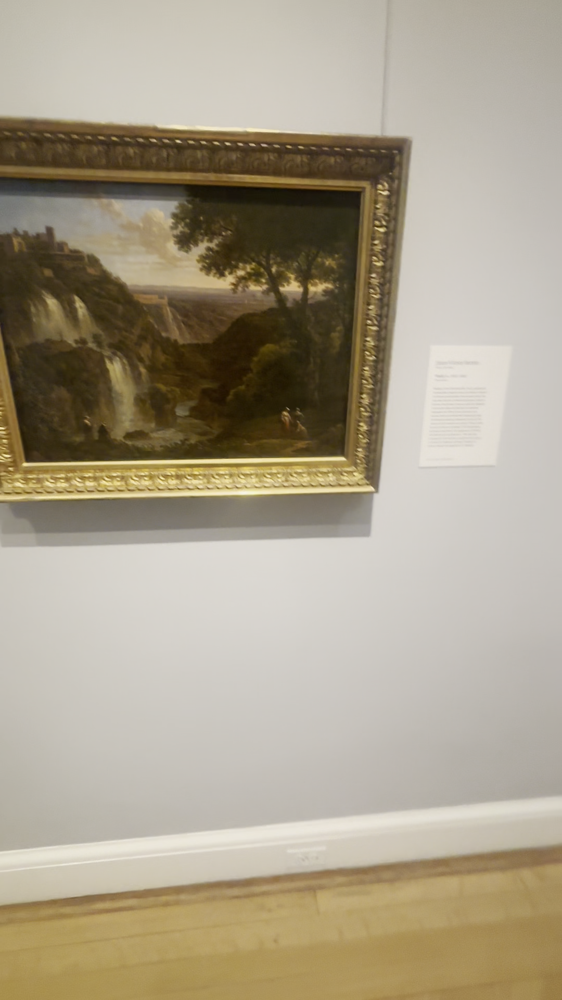
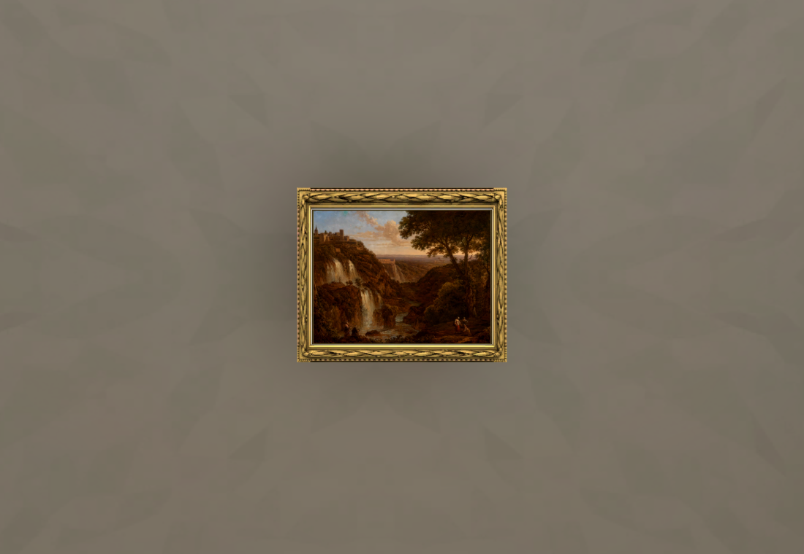
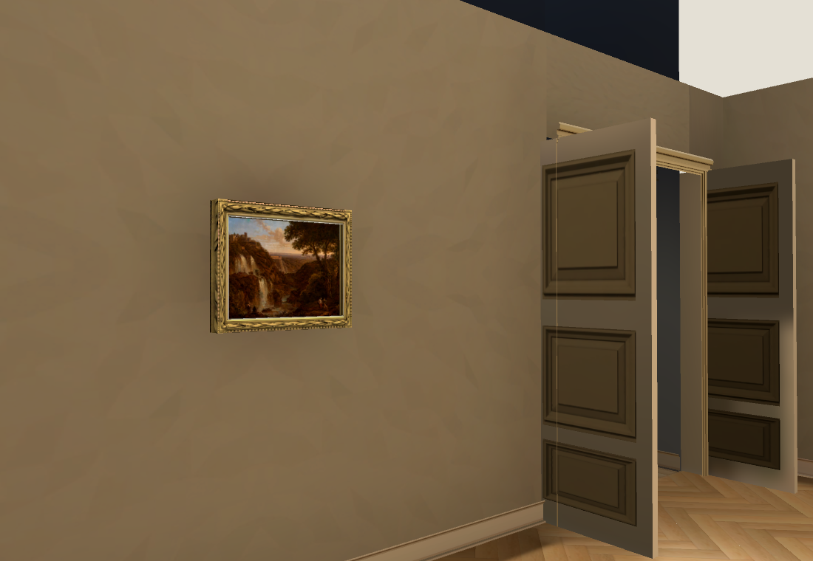
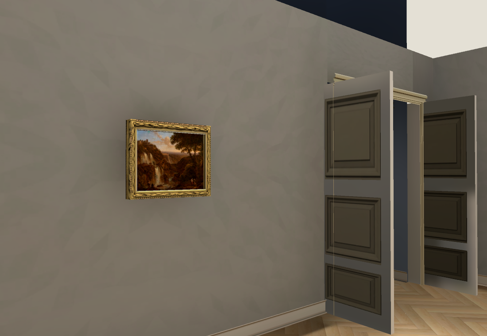
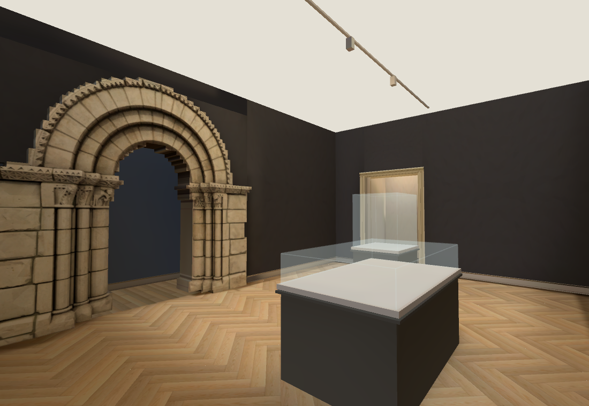
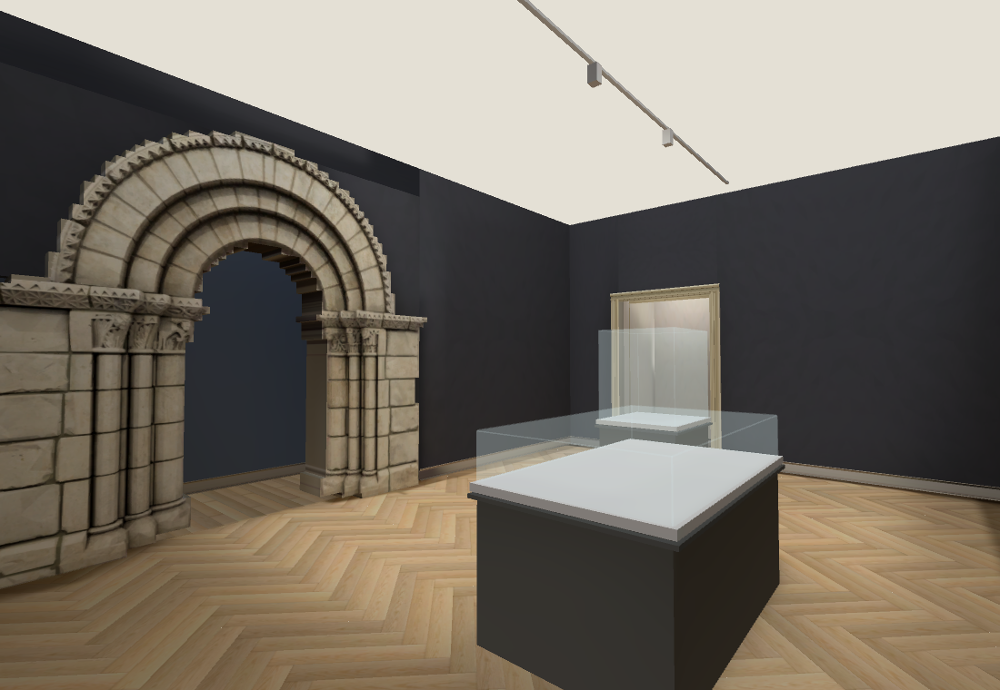

Collection rooms · Bertin and neutral grey-room light
Walk the latest rooms · Previous case arrangement / source wides
Press 3 for the purple gallery and walk through the grey-room door; Bertin is on the wall beside the Hall entrance. The full Hall still needs joining.

IMG_6380 91.25s: Bertin canvas and frame beside the Hall-door wall.
Official RISD 56.214 Tivoli canvas, one new Muse frame, source-relative bands. Exact relief/profile and offsets unaccepted.
Before: extra amber texture and warm fill made the grey wall brown.
Current: neutral plaster grain and neutral local fill, Main Hall cool ambient. Door geometry and room fit still provisional.
Before: dark-room plaster had the same unwanted brown cast.
Current: neutral dark-room palette. Two empty case shells; missing contents and wall sculptures remain unfinished.Native RTX and RTX Chrome 66/66 collision/camera checks; actual browser keyboard round trip passes. Native p95 30.3ms; browser p95 28.57ms. 593 lightmap surfaces rebuilt. Performance remains below 60fps target. Owning Shell 46/50: four pre-existing frozen layout/pixel failures are separately recorded; full reconstruction is not accepted.
One OpenRouter meta/muse-image output $0.01; cumulative $0.71 actual/$0.72 conservative. No paid lighting retry. Next: source-fit the complete Hall and adjoining room extents, then continue missing objects and architectural details. Collection only; heartbeat disabled.